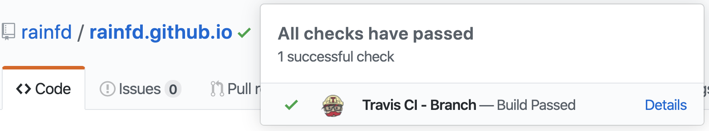
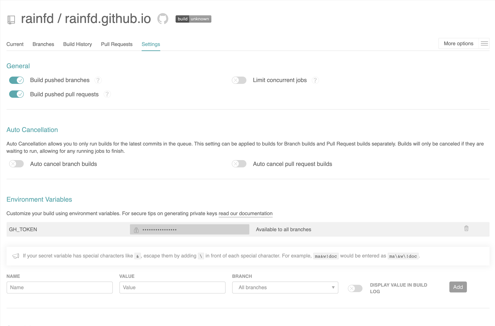
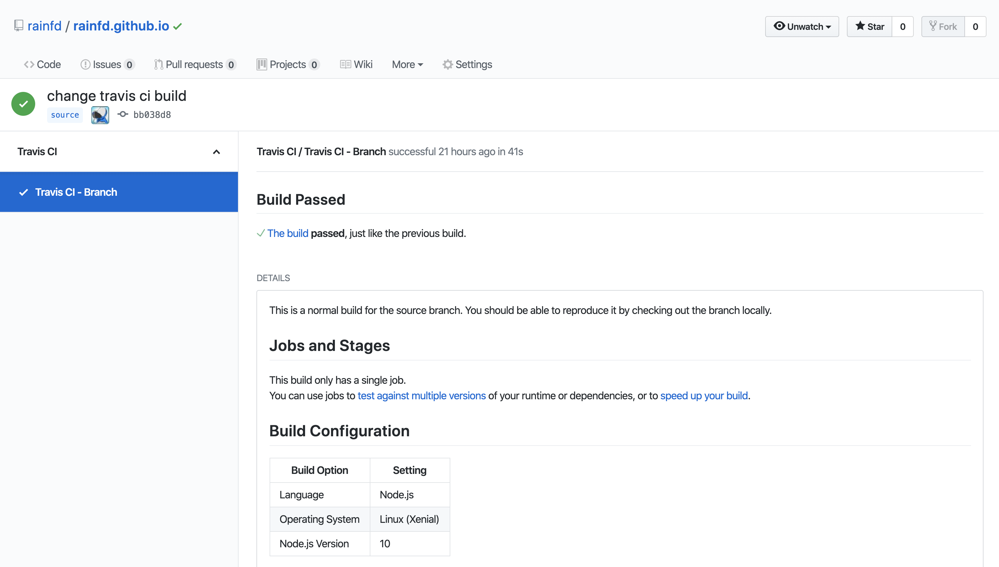
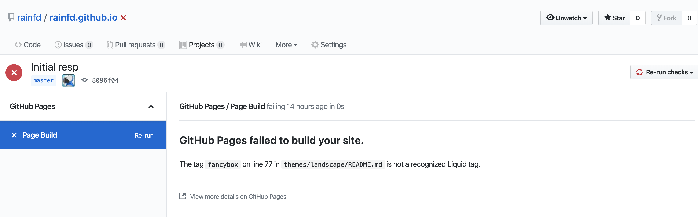

GitHub Pages
GithubPage分两种，一种是用户自己的个人主页，另一种是项目的主页
- 个人主页：域名为username.github.io，username与Github用户名一致，只能使用仓库中的master分支作为构建GithubPage的页面。
- 项目主页: 域名为username.github.io/project，project为项目名，能指定任意分支作为构建页面
以下部署说明只针对个人主页，假设你部署过个人主页，相信部署项目主页对你也不是什么难事。
Travis CI
GIthub很早就使用Travis CI进行自动化构建。在某个版本更新后，Github可以直接查看Travis CI构建的结果了。

这里我们可以将博客的项目源码上传到Github，再触发Travis CI将构建的结果推送到我个人主页rainfd.github.io的master上。
注意源码要推送到非master分支，因为个人主页只能用master分支作为GithubPage。
部署流程
在Github上仓库，并命名为 username.github.io。
在你hexo博客的代码中添加
.gitignore，忽略hexo 生成的静态文件盒其他无关文件。可以参考以下的文件。1
2
3
4
5db.json
*.log
node_modules/
public/
.deploy*/%
假设你跟我一样，需要经常将使用的第三方主题保持跟开源一致，可以将该主题fork下来，作为子模块添加到你的博客代码中
1
git submodule add $url themes/your_theme
注册Travis CI并授权。
在Applications settings上配置Travis CI，授予username.githu.io的访问权限。
设置完后悔重定向到Travis的页面。
在Github里创建新的Token，权限至少包含repo下的所有权限。
跳回刚才的Travis的页面(或者重新登录Travis)，将刚才创建的Token，作为环境变量 GH_TOKEN 设置到Travis对应的仓库中，最后记得保存一下。

将配置文件
.travis.yml添加到博客代码中(我使用的是source分支存储源码)1
2
3
4
5
6
7
8
9
10
11
12
13
14
15
16
17
18
19sudo: false
language: node_js
node_js:
- 10 # use nodejs v10 LTS
cache: npm
branches:
only: # 只有当以下分支有变动时，才触发构建
- source # build master branch only
script:
- hexo generate # generate static files
deploy:
provider: pages
skip-cleanup: true
github-token: $GH_TOKEN
keep-history: true
on: # 基于什么分支进行构建
branch: source
target_branch: master # 构建目标分支，默认为gp-pages
local-dir: public # 部署目标目录
Hexo的TravisCI部署教程为: https://hexo.io/docs/github-pages
Travis CI部署Gtihub Page的配置说明: https://docs.travis-ci.com/user/deployment/pages/
这里针对博客代码里还包含原始主题
将代码推送到你的仓库存储源码的分支(记住不能是master分支)。
等待Travis构建完毕。你也可以点击项目名旁边的符号查看构建进度

如果因为以下原因构建失败，需要将对应文件的77行删掉(原因是GtihubPage默认使用Jelly作为构建模板，77行中的语法与Jelly的语法冲突)。

最后当然是登录 username.github.io 检查你的博客主页。